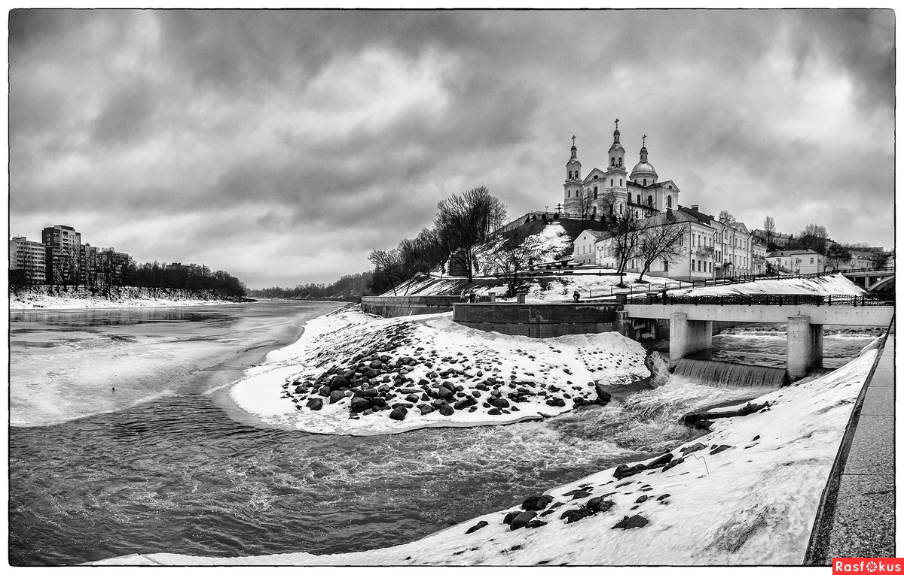

История Витебска

Как и большинство древних городов Восточной Европы, Витебск возник у слияния двух рек - Западной Двины, несущей свои воды в Балтийское море и Витьбы, от которой и пошло название города.
Археологические исследования свидетельствуют, что в устье Витьбы существовали поселения, основанные балтскими племенами, которых к IX веку сменили славянские племена кривичей.
Согласно легенде, город был заложен киевской княгиней Ольгой в 974 году и в древнерусских летописях упоминается с 1021 года. Расположенный на перекрестке важнейших торговых путей древности («из варяг в греки» и Великого Волжского (Булгарского), к концу XII веку Витебск превращается в центр ремесла и торговли, становится центром удельного княжества, подчиняющегося Полоцким, а временами, Смоленским князьям.
На Замковой горе находилась резиденция князя, а ниже жил люд попроще - торговцы и ремесленники. Уже в XII веке в городе был построен первый каменный храм – православная Свято-Благовещенская церковь, где хранились эталоны мер веса и длинны, используемые при торговых операциях; переписывались книги, летописи; обучались дети.
Последним восточно-славянским удельным князем был Ярослав Васильевич, который в 1318 году выдал свою дочь за князя Ольгерда, сына великого князя литовского Гедемина. Находясь в составе Великого Княжества Литовского, город пользовался льготами и автономией, вокруг него были возведены мощные фортификационные укрепления.
С 1506 года Витебск стал центром Витебского воеводства Великого Княжества Литовского, а с 1569 года - Речи Посполитой.
В 1597 году от короля Сигизмунда III Витебск получил свой герб и грамоту на магдебургское право, что давало возможность регулировать жизнь города с помощью собственной системы юридических норм.
Для Речи Посполитой Витебск оставался важной в стратегическом отношении крепостью на восточных рубежах.
В силу своего положения город постоянно становился участником кровавых войн, разрушался и восстанавливался . В XIV - начале XV вв. он пострадал от междоусобиц литовских князей Витовта и Свидригайло; в XVI - XVII вв. от войн между Москвой и Речью Посполитой (Ливонская война при Иване Грозном, войны при Алексее Михайловиче).
В 1708 году во время Северной войны между Швецией и Россией (в союзе с Речью Посполитой) город по приказу Петра I был сожжен, за финансовую поддержку оказанную витебской знатью шведам.
В годы Отечественной войны 1812 года горд оккупировали войска Наполеона, нанеся ему значительный урон.
В XVII веке Витебск становится ареной острого межконфессионального противостояния. В это время в город прибыли католические монахи ( в первую очередь иезуиты), построившие в городе свои резиденции и храмы, открыли школы для обучения светских лиц. Все православные храмы и монастыри передаются униатам (греко -католикам), а исповедование православия запрещается, вплоть до 1772 года.
При коллегиуме иезуитов действовала философская студия, музыкальная бурса, конвикт для шляхты, библиотека и аптека, обслуживавшая жителей города. Здесь же находилась усыпальница князей Огинских (воевода Витебский), которые по богатству и могуществу соперничали с Радзивилами.
В 1792 году Витебск вошел в состав Российской империи и в 1796 году стал центром Белорусской, с 1802 года Витебской губернии.
Город стал быстро развиваться. Уже в первые десятилетия ХХ века он - один из крупнейших центров Беларуси (109 тысяч жителей, 45 предприятий, 2 гимназии, учительский институт, духовная семинария, 5 библиотек, частная художественная школа Ю. Пэна). Значительная часть населения города составляли евреи, начавшие селиться в городе с XVII века с приходом иезуитов.
В 20-х годах ХХ века, Витебск становится центром художественной жизни. В городе Марком Шагалом было основано Народное художественное училище, в котором работали художники в разном направлении и стиле – Ю. Пэн, К. Малевич, Г. Фальк, М. Добужинский и др. Они проводили выставки, участвовали в диспутах, оформляли город. Казимир Малевич и его единомышленники создали объединение художников «Утвердители нового искусства» ( УНОВИС ). Была открыта Витебская Народная консерватория, создан Театр революционной сатиры (Теревсат). В эти годы с витебском связана жизнь и деятельность М.М. Бахтина – известного философа, ученого литературоведа; И. Соллертинского – музыковеда. Театроведа. Историка и теоретика балетного искусства.
В 1918 году Витебск вошел в состав Западной области РСФСР, а в 1924 году в состав БССР, с 1938 года – он областной центр, насчитывающий 209 предприятий, 3 ВУЗа, 42 общеобразовательные школы, 40 библиотек, 11 больниц, 3 кинотеатра, цирк и драмтеатр.
Самые тяжелые испытания выпали на долю Витебска во время Великой
Отечественной войны. На дальних и ближних подступах к городу шли
ожесточенные бои, однако он был захвачен гитлеровскими оккупантами.
Захвачен, но не покорен. Освобожденный 26 июня 1944 года от гитлеровских оккупантов город
лежал в руинах, в подвалах домов уцелело всего 118 жителей из 167,3
тысяч (по всесоюзной переписи 1939 года).
За годы оккупации в Витебске десятки тысяч жителей были уничтожены,
замучены в концлагерях и угнаны на каторгу в Германию. Город был разрушен более, чем на 90%. Были уничтожены целые кварталы города, все промышленные
предприятия, памятники архитектуры. Благодаря героическим усилиям
трудящихся Беларуси Витебск возродился из пепла.
Современный Витебск - один из крупнейших индустриальных центров
республики, город с высокоразвитой промышленностью, наукой и
культурой. Улицы и площади города вновь украшают памятники архитектуры
и монументального искусства, которые и теперь придают древним улицам
города над Двиной красоту и неповторимость.
Ведущей отраслью хозяйства Витебска является
промышленность. В качестве важнейших отраслей промышленности выступают
машиностроение и металлообработка, деревообрабатывающая,
электронная, легкая и пищевая промышленность.
Большое внимание придается отрасли высококвалифицированного
машиностроения, приборостроения и электротехнической
промышленности, главным образом за счет реконструкции и технического
перевооружения действующих предприятий.
К преобладающим видам продукции относятся: металлорежущие и
деревообрабатывающие станки, строительный кирпич, ткани, ковры и
ковровые изделия, обувь, телевизионная техника, часы,
чулочно-трикотажные изделия, мебель, деловая древесина и т.д.
Основными работодателями являются крупные государственные
предприятия, арендные и акционерные общества, крупные частные фирмы и
предприниматели.
Основными приоритетами развития города являются сегодня привлечение
иностранных инвестиций в создание и внедрение энергосберегающих и
экологических технологий, реконструкция приоритетных предприятий и
повышение конкурентоспособности выпускаемой ими продукции. Особое внимание при этом предусматривается уделять
модернизации наукоемкого сектора, экспортно-ориентированным
предприятиям и импортозамещающим производствам, созданию и
развитию производств, основанных на новых и высоких технологиях
(ноу-хау), созданию новых рабочих мест и в первую очередь, на малых и
средних предприятиях всех форм собственности, производству
высококачественных продуктов питания, развитию малого и среднего
частного бизнеса.